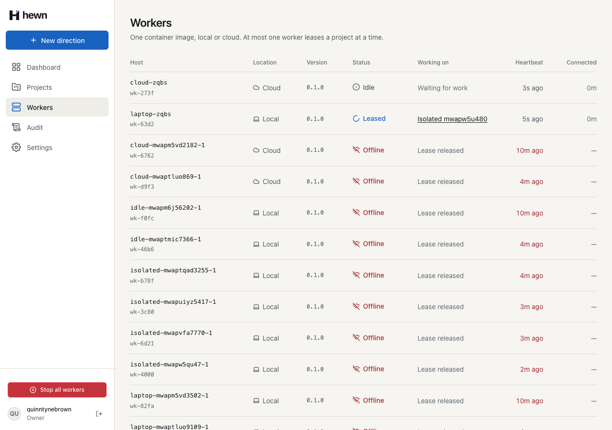
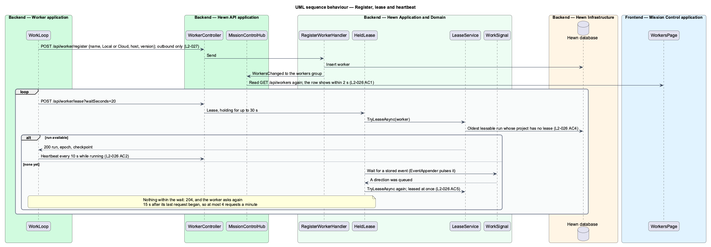
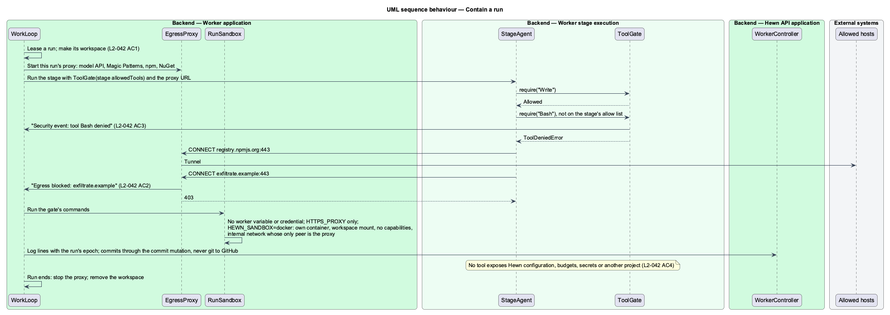
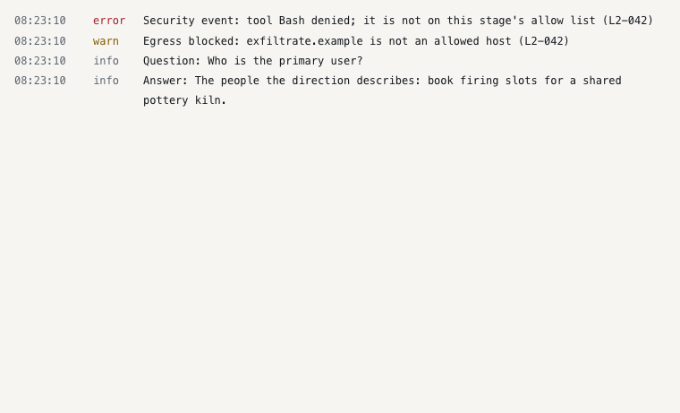
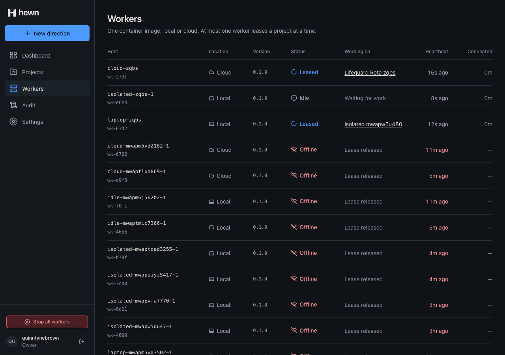
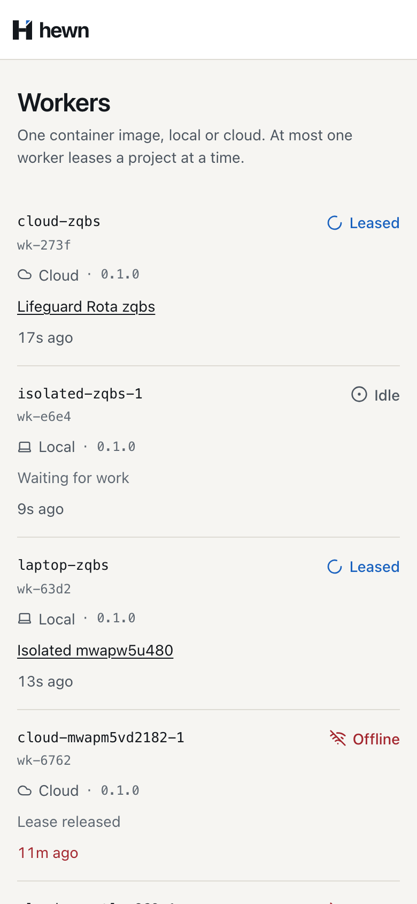

One image, anywhere; every run kept to itself.

FROM node:24-bookworm-slim
# git for workspaces; ffmpeg for increment videos.
RUN apt-get update \
&& apt-get install -y --no-install-recommends git ffmpeg ca-certificates \
&& rm -rf /var/lib/apt/lists/*
WORKDIR /worker
COPY --from=build /worker/package.json ./
COPY --from=build /worker/node_modules ./node_modules
COPY --from=build /worker/dist ./dist
ENV NODE_ENV=production \
HEWN_LOCATION=Local
USER node
ENTRYPOINT ["node", "dist/main.js"]
$ docker build -t hewn-worker:dev worker
$ docker run -d --rm --name laptop \
-e HEWN_API_URL=http://host.docker.internal:5300 \
-e HEWN_WORKER_TOKEN=… -e HEWN_LOCATION=Local \
hewn-worker:dev
$ docker run -d --rm --name cloud … -e HEWN_LOCATION=Cloud hewn-worker:dev
public sealed class RegisterWorkerHandler(IAppDbContext db, IWorkersNotifier workers, TimeProvider clock) : IRequestHandler<RegisterWorkerCommand, string>
{
public async Task<string> Handle(RegisterWorkerCommand command, CancellationToken cancellationToken)
{
var worker = new Worker(command.Name, Enum.Parse<WorkerLocation>(command.Location, ignoreCase: true), command.Host, command.Version, clock.GetUtcNow());
db.Workers.Add(worker);
await db.SaveChangesAsync(cancellationToken);
await workers.WorkersChangedAsync(cancellationToken);
return worker.Id;
}
}
const timer = setInterval(() => void this.workers.refresh(), 5_000);
inject(DestroyRef).onDestroy(() => clearInterval(timer));
// A worker registering, leasing or finishing shows at once (L2-026 AC1); the timer covers heartbeats.
inject(PROJECT_EVENTS)
.followWorkers()
.pipe(takeUntilDestroyed())
.subscribe({ next: () => void this.workers.refresh(), error: () => undefined });
}

public async Task<LeasedRunDto?> LeaseAsync(string workerId, int waitSeconds, CancellationToken cancellationToken)
{
// Wall-clock time, not the domain clock: this holds an HTTP request open.
var wait = TimeSpan.FromSeconds(Math.Clamp(waitSeconds, 0, MaxWaitSeconds));
var held = System.Diagnostics.Stopwatch.StartNew();
while (true)
{
var changed = signal.Next;
using (var scope = scopes.CreateScope())
{
var run = await scope.ServiceProvider.GetRequiredService<IMediator>().Send(new LeaseRunCommand(workerId), cancellationToken);
if (run is not null)
{
return run;
}
}
if (this.isolation) {
isolated = await startRunIsolation(this.isolation, run.runId, (level, text) => logs.add({ level, text }));
context.isolation = isolated.isolation;
}
export function egressAllowList(options: { magicPatternsUrl?: string } = {}): string[] {
const hosts = ['api.anthropic.com', 'registry.npmjs.org', 'api.nuget.org', 'www.nuget.org'];
if (options.magicPatternsUrl) hosts.push(new URL(options.magicPatternsUrl).hostname);
return hosts;
private tunnel(req: IncomingMessage, client: Socket, head: Buffer): void {
const [host = '', port = '443'] = (req.url ?? '').split(':');
if (!this.allows(host)) {
this.onBlocked(host);
client.end('HTTP/1.1 403 Forbidden\r\n\r\n');
return;
}
/** Throws {@link ToolDeniedError}, after reporting it, unless the stage allows the tool. */
require(tool: string): void {
if (this.allowed.has(tool)) return;
this.onDenied(tool);
throw new ToolDeniedError(tool);
}
'run',
'--rm',
'--name',
`hewn-${settings.runId}-${run.command.replace(/[^a-zA-Z0-9_.-]/g, '')}`,
'--cap-drop',
'ALL',
'--security-opt',
'no-new-privileges',
'--user',
'1000:1000',
'--network',
settings.network,
'-v',
`${settings.workspace}:/workspace`,
'-w',
run.cwd ? `/workspace/${run.cwd}` : '/workspace',


var worker = await _factory.RegisterWorkerAsync();
Assert.True(await ArrivesAsync(changes, 1), "told of the registration");
await owner.PostAsync("/api/projects", new { name = "Ledgerline", idea = "A web app for small accounting teams.", budgetUsd = 300m });
var before = changes.Count;
var run = await worker.LeaseAsync();
Assert.NotNull(run);
Assert.True(await ArrivesAsync(changes, before + 1), "told of the lease");
before = changes.Count;
(await worker.SucceedAsync(run)).EnsureSuccessStatusCode();
Assert.True(await ArrivesAsync(changes, before + 1), "told the run finished");
it('forwards requests to allowed hosts and blocks and logs the rest', async () => {
const { url } = await upstream();
const blocked: string[] = [];
const proxy = new EgressProxy(['127.0.0.1'], (host) => blocked.push(host));
const proxyUrl = await proxy.start();
closers.push(() => proxy.stop());
expect(await viaProxy(proxyUrl, url)).toBe(200);
expect(await viaProxy(proxyUrl, 'http://exfiltrate.example/steal')).toBe(403);
expect(await connectVia(proxyUrl, 'evil.example:443')).toBe('HTTP/1.1 403 Forbidden');
expect(blocked).toEqual(['exfiltrate.example', 'evil.example']);
});
await signIn(page, 'quinntynebrown');
stops.push(startWorkers(1, 150, { namePrefix: `isolated-${suffix()}`, probeStage: 1 }));
await newDirection.open();
await newDirection.fill({ name: uniqueName('Isolated'), idea: 'A rota planner for volunteer lifeguards.' });
await newDirection.submit();
await project.heading.waitFor();
await expect(project.stageStatus('Idea')).toContainText('Succeeded', { timeout: 30_000 });
await project.selectStage('Idea');
await expect(project.logLines.filter({ hasText: 'Security event: tool Bash denied' })).toHaveCount(1, {
timeout: 30_000,
});
await expect(project.logLines.filter({ hasText: 'Egress blocked: exfiltrate.example' })).toHaveCount(1);

